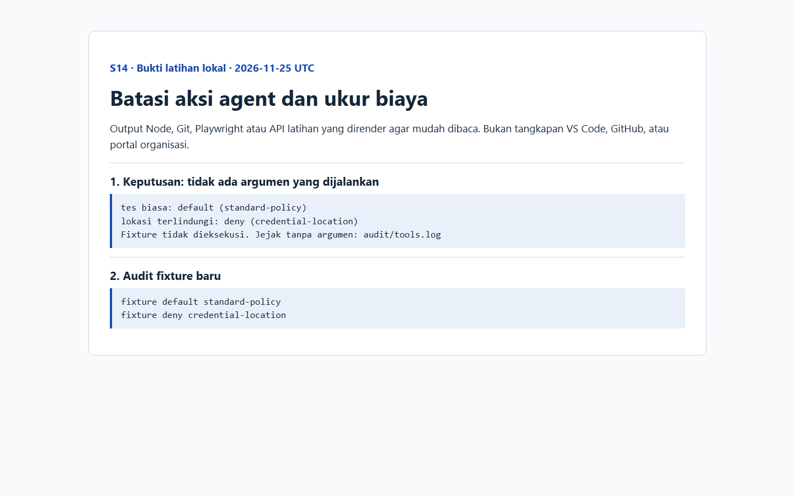

S14 · Level 5 — Governance dan capstone
Batasi aksi agent dan ukur biaya
Pisahkan hook, izin Actions, gate branch, dan budget. Dashboard organisasi bukan bagian dari fixture lokal.
Sudah diuji secara lokal. pending · sesi cloud/usage; fixture aman saja. Ikuti langkah · Ulangi dari awal.
Masalah yang dihadapi
Ibu Maya tidak mau membuka akses agent tanpa kontrol dan penanggung jawab biaya.
Kerugian: Pilot berhenti atau biaya dan akses tidak terpantau.
Masalah pada baseline
.github/hooks/guardrails.json
Lihat potongan atau catatan sumber
preToolUse → deny atau keputusan standar; log tanpa argumen.Solusi dan alur
Pisahkan hook, izin Actions, gate branch, dan budget. Dashboard organisasi bukan bagian dari fixture lokal.

- Agent meminta tool.
- Hook memeriksa kategori.
- Kategori terlarang ditolak.
- Selain itu, izin runtime tetap menentukan.
- Audit lokal mencatat waktu dan kategori.
Lihat sumber Mermaid

flowchart TB
request["Agent minta menjalankan tool"] -->|Periksa masukan| hook{"Hook preToolUse"}
hook -->|Tolak kategori terlarang| deny["Tidak dijalankan"]
hook -->|Serahkan ke izin normal| policy["Izin runtime"]
deny -->|Catat keputusan| audit["Metadata audit lokal"]
policy -->|Catat tanpa argumen| audit
classDef ai fill:#efe6ff,stroke:#7354a4,color:#382459
classDef gate fill:#fff2dc,stroke:#955b17,color:#5b3711
class request ai
class hook,deny,policy gateLangkah demo
Jalankan fixture yang aman
Buka Terminal → New Terminal. Jalankan fixture bawaan; ia mengevaluasi dua contoh dan tidak menjalankan argumennya. Jangan membuat issue live berisi permintaan akses rahasia atau perintah penghapusan.
npm run guard:demo
Perbesar S14-local-result.pngSumber: Output lokal yang dirender · bukan layar portal. Output pemeriksaan lokal S14: Keputusan: tidak ada argumen yang dijalankan; Audit fixture baru. Tunjuk kontrol dan jejak audit
Buka .github/hooks/guardrails.json dan cari preToolUse. Lihat audit fixture yang baru: waktu, phase, decision, category. Jangan bagikan log sesi lain. Cari deny pada kasus lokasi terlindungi.
.github/hooks/guardrails.jsonPisahkan izin dari biaya
Buka pengaturan Billing → Usage pada akun latihan bila berwenang. Bandingkan dengan permissions dan safe-outputs di workflow; keduanya bukan metrik biaya. Tidak ada premium request atau biaya live yang terukur.
docs/ORG-SETUP.md

Sebelum dan sesudah
S14-before.pngS14-after.png| Bagian | Sebelum | Sesudah / target |
|---|---|---|
| Perilaku | Pemeriksa menerima dua input fixture tanpa mengeksekusinya. | Keputusan standard-policy/default untuk tes, deny/credential-location untuk lokasi terlindungi. Audit hanya metadata. |
| Bukti visual | Belum direkam. | Belum direkam. |
| Keputusan | Peserta membaca keadaan awal. | Manusia memeriksa hasil sebelum meneruskan. |
Manfaat
- Manusia bisa menunjukkan izin yang dibatasi dan melihat biaya secara terpisah.
Bukti dan sumber
Hasil di bawah diperiksa pada 2026-11-25 UTC. pending · sesi cloud/usage; fixture aman saja. Pembacaan data lokal tidak membuktikan agent, PR, scanner, atau fitur organisasi sudah berjalan.
Template issue S14 di GitHub · Data latihan dan pengukuran
Belum direkam · 5 layar yang belum ada
S14-before.pngS14-01-hooks-file.pngS14-02-usage.pngS14-03-gh-aw-permissions.pngS14-after.png
Ulangi latihan
Pemeriksaan tidak menulis kode atau data remote. Ulangi perintah di terminal baru bila sebelumnya mengubah variabel lingkungan.
npm run reset -- --fresh